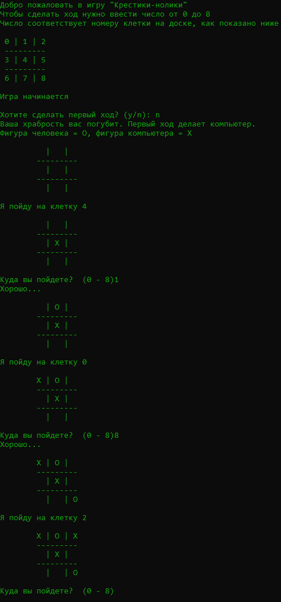

Описание

Мой проект на С++ под названием крестики нолики. На картинке можно увидеть как выгледит интерфейс игры. Вначале игроку даётся правила игры, выбор хода, а так же доска с обозначениями что бы игроку было понятнее куда ходить
После определения фигур (обозначений кто за кого играет) начинается игра. Кто ходит первый определяется рандомно. Дальше идёт сам процесс игры в конце которого может быть три итога (Победа(игрока), Ничья, Проигрыш)